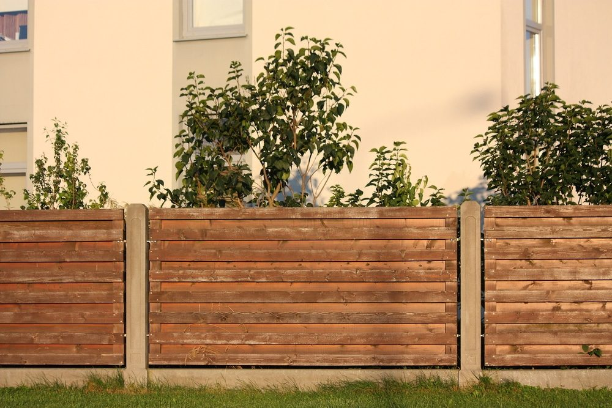
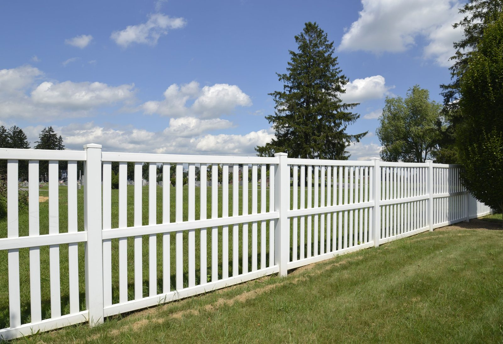

In This Guide
- Chain link is usually the lowest-cost way to enclose a yard, and wood generally comes next, with vinyl, aluminum, and wrought iron sitting higher.
- The price of any fence depends on height, total footage, the number of gates, the ground it crosses, and the material you choose.
- A cheaper fence can cost more over time if it needs frequent sealing, painting, or repairs in Louisiana humidity, rain, and heat.
- A free estimate turns a general ranking into a real number for your yard, so compare quotes for the same height, footage, and gates.
Everyone asking about fence prices wants the same thing: a solid enclosure without overspending. The honest answer is that some materials cost less to put in the ground, and some cost less to live with. This guide ranks the common residential options and explains what actually moves the price.
Big Easy Fence installs wood, vinyl, chain link, aluminum, and wrought iron for New Orleans homes, so the comparison below sticks to those five materials.
The Short Answer on Cost
In general, chain link is the most affordable option to install, wood usually follows, and vinyl, aluminum, and wrought iron cost more. That is a rough order, not a rule. A short wood fence with no gates can come in under a tall vinyl one, and a simple chain link run can climb quickly once you add slats, a wide gate, and a long, uneven property line.
Because so many details shift the total, we are not quoting per-foot prices here. A free estimate is the only way to get a number that fits your lot.
| Material | Starting Cost | Upkeep | Best For |
|---|---|---|---|
| Chain Link | Lower | Low | Enclosing a yard on a budget |
| Wood | Lower to mid | Sealing and repairs | Privacy at a moderate price |
| Vinyl | Mid to higher | Washing | Clean look, less painting |
| Aluminum | Mid to higher | Low, keep finish intact | Open views, pools, pets |
| Wrought Iron | Higher | Touch-up paint | Formal, decorative look |
Fence Types From Lower to Higher Cost
Chain Link
Chain link is plain, quick to install, and easy on the budget. It works well for backyards, dog runs, and side yards where you want a boundary more than a design feature. The mesh comes in several heights, and you can add privacy slats later if you change your mind. Our chain link fences page shows the options.
Wood
Wood is a popular choice for a reason. It offers privacy, it can be built in many styles, and it usually costs less up front than vinyl or metal. Price shifts with the type of wood, the height, and the style. The catch in Louisiana is care. Humidity and heavy rain lead to rot and warping if the wood is left bare, and termites are always a risk near the ground. Plan on regular sealing. Details are on our wood fences page.

Vinyl
Vinyl costs more to install than basic wood, but it does not need painting or staining, and it does not feed termites. A wash now and then keeps it looking fresh. It can fade in strong sun and crack under impact, so it is not indestructible. If low upkeep matters to you, take a look at vinyl fencing and weigh the higher starting cost against fewer weekends spent on maintenance.

Aluminum
Aluminum gives you an open, tidy look that suits pools, front yards, and pet areas. It does not rust, although the painted finish still needs to stay in good shape, and it can corrode if that finish is damaged. Expect a higher price than chain link or wood. You can read more on aluminum fencing.
Wrought Iron
Wrought iron sits at the top of the price range for most homeowners. It brings strength and a formal, classic appearance, and it suits older New Orleans homes especially well. Iron rusts once paint or coating wears through, so touch-ups are part of ownership. If the look matters more to you than the budget, wrought iron fencing is worth pricing.
What Changes the Price of Any Fence
Two homes can pick the same material and receive very different quotes. These are the usual reasons.
- Total footage. More fence means more posts, more panels, and more labor.
- Height. A taller fence uses more material and needs sturdier posts to handle wind.
- Gates. Every gate adds hardware and framing, and wide gates for driveways cost more than a walk-through gate.
- Terrain and access. Slopes, tree roots, tight side yards, and hard-to-reach spots slow down the crew.
- Existing fence. Tearing out and hauling away an old fence is extra work compared with a clean line.
- Material and style. A solid privacy design uses more material than an open picket or a simple mesh.
If you are comparing bids, make sure each one covers the same height, footage, gates, and removal so you are looking at the same fence.
The Cheapest Fence Is Not Always the Lowest Cost
Cost over time matters as much as the first invoice. Louisiana is tough on fences. Humidity and rain shorten the life of untreated wood, strong sun fades some finishes, and storm winds test every post. A low-priced fence that needs frequent sealing, paint, or repair can end up costing more than a sturdier one that you install once.
Ask what each fence will need over the next several years, such as sealing, repainting, or replacing panels, and add that to the installation price before you decide.
Repairs are part of that picture too. Post problems are common after storm season, and a damaged section is usually cheaper to fix early than to replace later. Our fence repair service covers that side of ownership.
Check the Rules Before You Buy
The lowest price does not help if the fence is not allowed. Height, materials, and placement can be limited by your city or parish and by your HOA. Read our guide on permits for a yard fence for what to check first, and confirm the details with the local office before you sign anything.
Getting an Accurate Price
A good estimate starts with a walk around the yard. Measure the run if you can, note where gates should go, and decide roughly how tall you want the fence. Photos of the property line help, and so does a list of what you want the fence to do, whether that is privacy, keeping pets in, or defining the yard. If you are still deciding on a material, a site visit usually narrows the field quickly. When you are ready to price your options, ask about a free estimate for a fence at your home.
Want a Real Number for Your Yard?
Share your yard size, the height you want, and how many gates you need, and we will walk you through the options worth pricing.